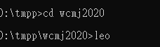
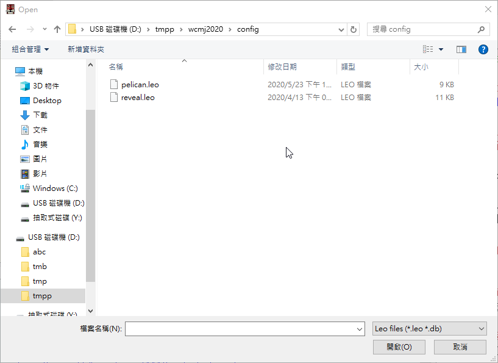
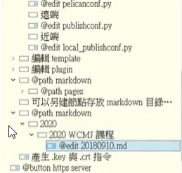
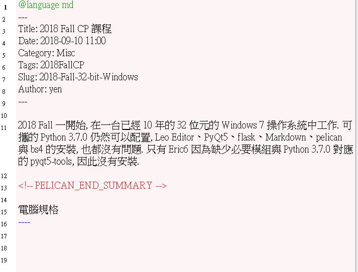
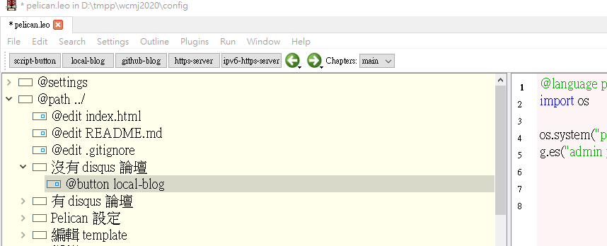

W10(keys) <<
Previous Next >> W13
W11＆W12(leo)
*來源https://drive.google.com/file/d/1d_YpSrTdKLPKZjkHW2TNsbHRU1ePNRFl/view
這兩週的內容是連貫的，所以放一起講。
1 在指令欄進入wcmj2020，打leo

2 File > Open-Outline > config >pelican.leo

3 Pelican設定 >共用-第6和7行，改成:
AUTHOR = '50833102'
SITENAME = '50833102'
>遠端-第17行，改成:
SITEURL = 'https://50833102.github.io/wcmj2020/blog'
>近端-不用改
4 @path markdown > 2020 > 2020 WCMJ 課程 > @edit 20180910.md

5 複製以下這段(標準格式)，再作修改

6 點擊 local-blog 這個按鈕(如果要發佈到遠端就改成github-blog)

7 打開wcmj2020，找到http-server.py丟到編輯器，在編輯器上方的工具欄選擇Tool，再選擇Go，編輯器右邊頁面會顯示8444已啟動
8 成功的話再上傳到遠端
W10(keys) <<
Previous Next >> W13